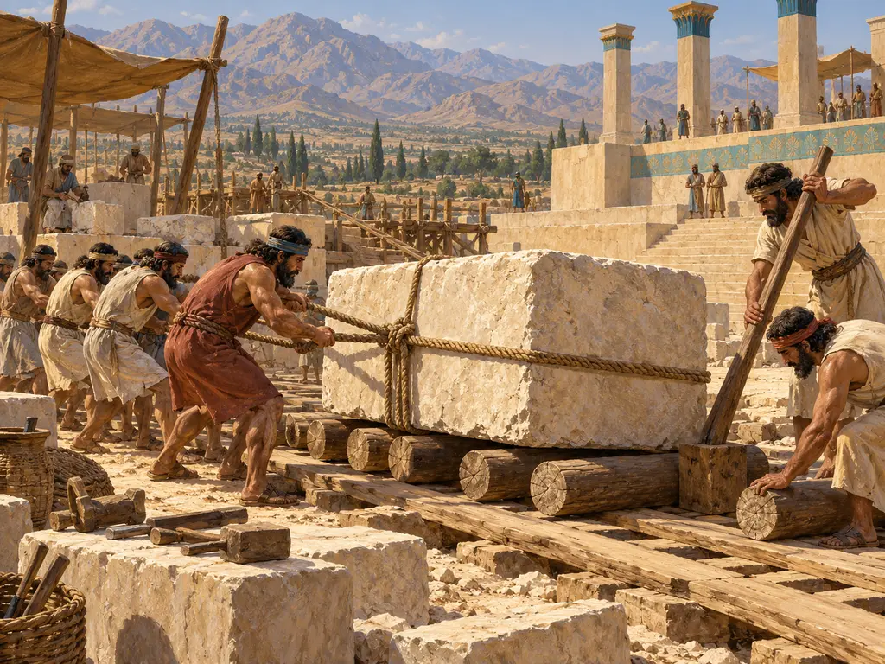
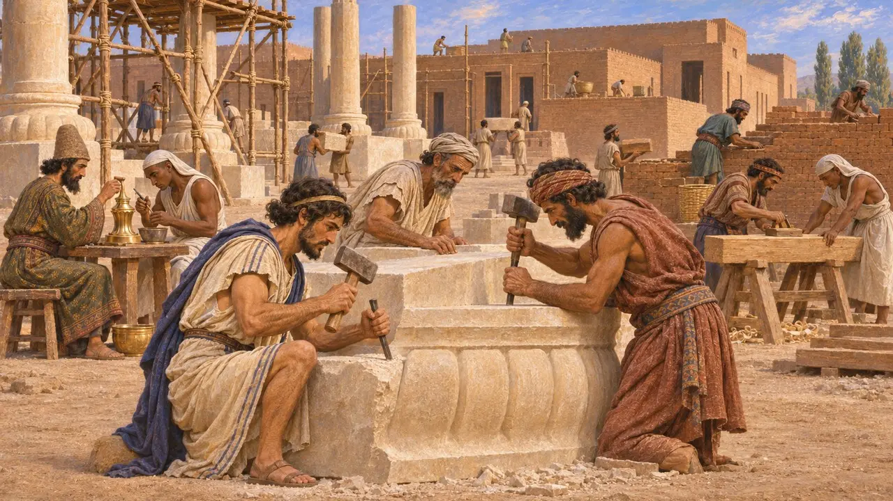
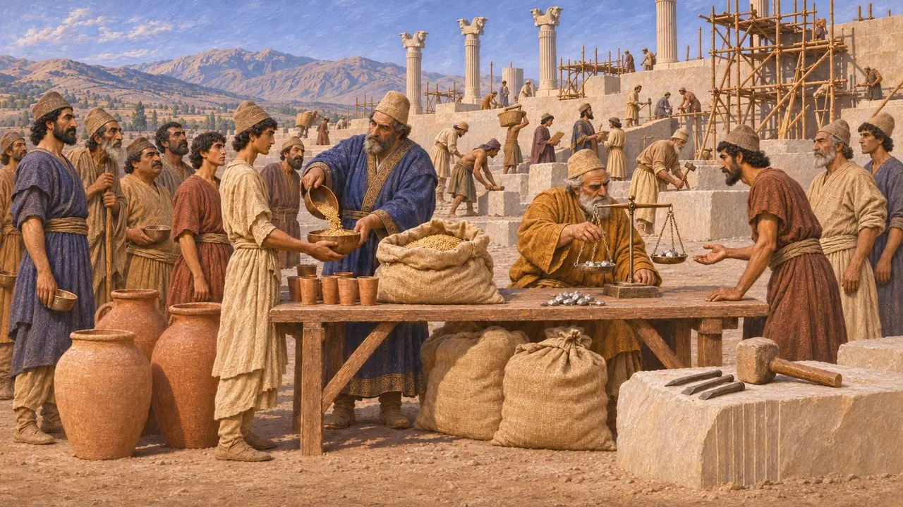
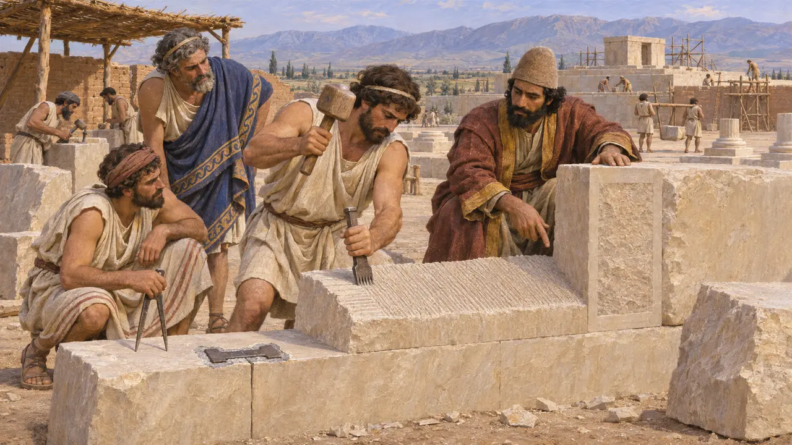
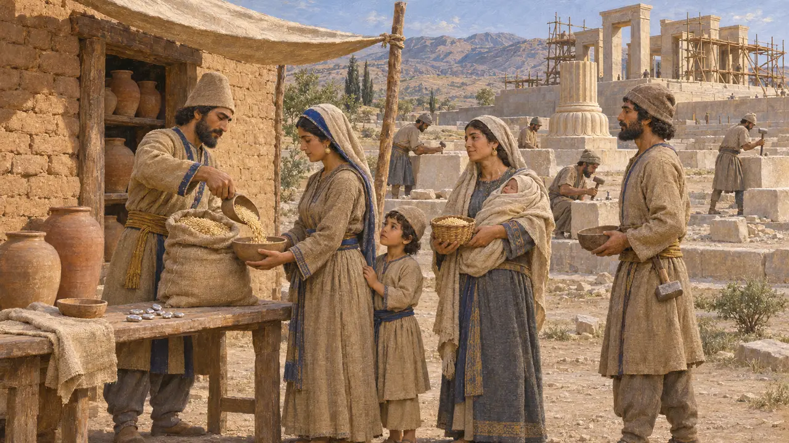

石工の宿営
ペルシスとエラムの王宮を築いた石工たち、紀元前550年頃～480年頃
アケメネス朝の王たちの宮殿、基壇、墓は、石工と労働者からなる大規模な労働力によって切り出され、築かれた。彼らは多くの地から集められ、王の蔵から食料を支給された。ダレイオス自身の建築碑文とペルセポリスの粘土板文書は、どのギリシアの著述家よりもはるかに鮮明にこれらの労働者の姿を伝えている。
ゲームでは： 本作では石工を一つの宿営にまとめ、すべての現場に派遣し、1現場あたり最大36人の石工が働く。これは簡略化であり、実際の王の事業では、王の行政機構が組織した多くの民族からなる大規模な配給制の労働力が動員された。

スーサに集った諸国の職人
同時代の記録ダレイオスはスーサの宮殿の勅許状に、資材と職人がどこから来たのかを列挙した。石工はイオニア人とサルディス人であったという。金細工はメディア人とエジプト人、木工はサルディス人とエジプト人、焼成煉瓦はバビロニア人が担った。この碑文は建物を帝国全体の事業として描いており、労働の記録であると同時に政治的な主張も込められている。
DSf; DSz

配給名簿に載る労働者
同時代の記録ペルセポリス城砦文書には、エラム語でクルタシュと呼ばれる労働者に支給された、穀物、葡萄酒、ビールの月ごとの配給が記録されている。作業集団の多くは大規模で、文書には石工やその他の職人の名が、ときに出身地とともに記されている。ペルセポリスの宝庫文書には、ダレイオスとクセルクセスの治世に基壇の工事に従事した職人たちへ、配給の一部に代えて銀で行われた支払いが記録されている。
R. Hallock, Persepolis Fortification Tablets, 1969; G. Cameron, Persepolis Treasury Tablets, 1948

パサルガダエにおけるイオニアとリュディアの工法
同時代の記録キュロスのパサルガダエの石造技術には、リュディアやイオニアで知られた技法が見られる。石工は歯付きの爪鑿を用い、接合面は縁の部分だけを平滑に仕上げた。これはアナテュローシスと呼ばれる手法である。石材は鉛で固定した蟻継ぎ形の鉄製かすがいで結ばれていた。研究者はこれを、キュロスがサルディスを攻略した後、おそらく西方の職人たちが東へ移ってきた証拠とみなしており、未完成の表面からは彼らの作業の工程がうかがえる。
C. Nylander, Ionians in Pasargadae, 1970; D. Stronach, Pasargadae, 1978

自由な労働者か、強制労働か
係争中ギリシアの著述家はペルシアの臣民を王の奴隷として描きがちで、近代の叙述にもそれに倣うものがあった。しかし粘土板文書が伝える姿はもっと多様である。男も女も子供も等級に応じた配給を受け、労働者の中には銀で報酬を受け取る者もおり、出産後の女性には追加の配給が与えられることもあった。クルタシュのうちどれほどが強制移住者、徴用された者、あるいは雇われた職人だったのか、また彼らがどの程度自由だったのかについて、歴史家の議論は今も続いている。
P. Briant, From Cyrus to Alexander, 2002; M. Brosius, Women in Ancient Persia, 1996
出典
- DSf
- R. Hallock, Persepolis Fortification Tablets, 1969
- G. Cameron, Persepolis Treasury Tablets, 1948
- C. Nylander, Ionians in Pasargadae, 1970
- D. Stronach, Pasargadae, 1978
- P. Briant, From Cyrus to Alexander, 2002